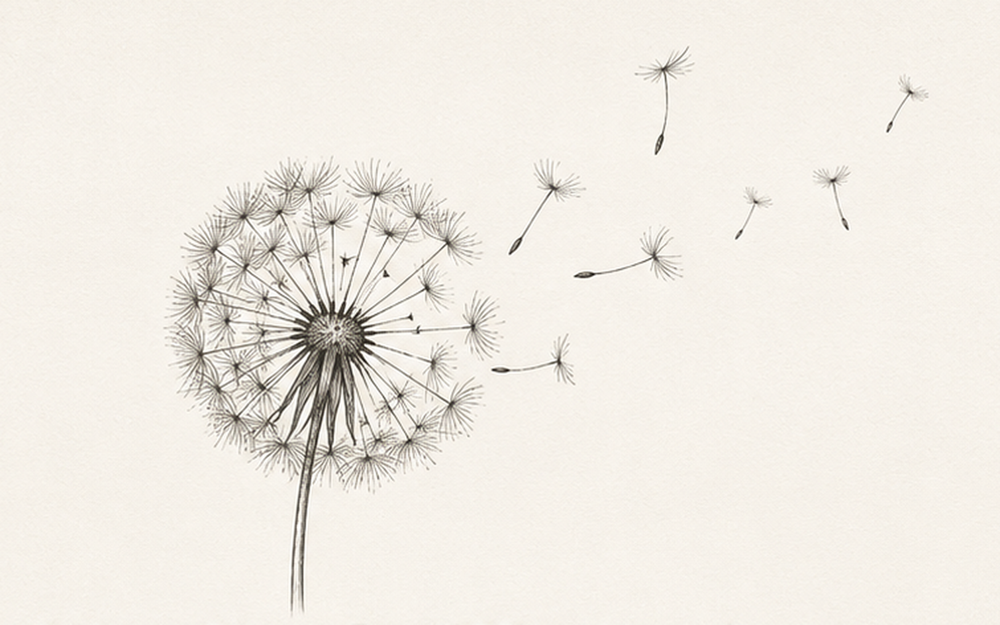

Foodways
Traditional recipes, culinary methods, seasonal eating, ingredient histories and the social practices surrounding food.

Research · Education · Archives · Stewardship
Preserving practical knowledge, cultural memory and responsible ways of living.
HESTIA is an independent initiative dedicated to researching, documenting, teaching and responsibly sharing knowledge relating to food, plants, preservation, hospitality, household practice, culture and environmental stewardship.
Explore HESTIAAbout HESTIA
There are many ways to tell the story of civilisation. The familiar version begins with rulers, wars, laws and monuments. Yet much of civilisation was sustained elsewhere: in kitchens, gardens, workshops, storerooms, farms and homes.
It endured through recipes remembered, seeds saved, food preserved, remedies recorded, tools maintained, guests received and skills taught by one generation to the next.
We chose the name HESTIA because the hearth was never merely a fire.
It was where knowledge became tradition, where care became habit, and where one generation quietly prepared the next.
We strive to preserve those practices.
Areas of focus
HESTIA focuses on practical bodies of knowledge that continue to shape everyday life, community resilience and cultural continuity.
Traditional recipes, culinary methods, seasonal eating, ingredient histories and the social practices surrounding food.
Drying, curing, pickling, fermenting, storing and other methods developed to extend usefulness and reduce waste.
Plant identification, cultivation, historical uses, cultural context and evidence-based evaluation of claims.
Documenting household preparations and remedies while distinguishing tradition, evidence, risk and uncertainty.
Seed saving, propagation, soil care, seasonal practice, small-scale cultivation and stewardship of useful plants.
Maintenance, making, repair, material knowledge and practical skills that support capable, less wasteful households.
Customs of welcome, shared meals, care, mutual aid and the everyday practices through which communities are sustained.
Oral histories, field notes, photographs, documents, recipes and records that might otherwise disappear.
What HESTIA does
HESTIA is being developed as a practical institution rather than a symbolic project. Its work will be organised around clear outputs.
Curated references, annotated reading lists, source notes and evidence reviews across HESTIA's fields of interest.
Documented recipes, practices, plant profiles, oral histories and cultural records with origin and context preserved.
Guides, workshops, field notes and teaching materials designed for careful, practical learning.
Essays, monographs, journals and practical handbooks produced with transparent sourcing and editorial standards.
Conversations, demonstrations and collaborations that bring together practitioners, researchers and learners.
Carefully developed products or services that support the institution without compromising evidence, provenance or stewardship.
How HESTIA works
State what is supported, what is historically reported, and what remains uncertain.
Preserve origin, place, authorship, community and purpose rather than extracting information from them.
Credit sources, practitioners and communities wherever knowledge can be traced.
Avoid exaggerated medical, botanical or technical claims and communicate limitations clearly.
Treat knowledge, materials, species and places as responsibilities rather than resources to exhaust.
Keep knowledge alive by allowing it to be tested, taught, adapted and passed forward.
About HESTIA
The HESTIA emblem is not merely about knowledge travelling outward. It represents the dandelion as a complete living system.
The dandelion was chosen because it embodies the philosophy of HESTIA. It is deeply rooted, remarkably resilient, and useful throughout its life. Nothing about it is merely ornamental. Its leaves, flowers, roots, and seeds each perform a distinct function. It nourishes, it endures, it adapts, it regenerates, and it renews itself. Even when the visible plant disappears, life remains quietly preserved beneath the surface until the conditions are right for growth once more.
The dandelion moves through a complete and recognisable life cycle: seed, seedling, rosette, flower, seed head, dispersal, dormancy, and renewal. No single stage defines the plant. Each prepares the next. Each depends upon what came before. Strength is not found in permanence, but in continuity.
For HESTIA, this cycle provides a model for the stewardship of knowledge.
Knowledge must first take root before it can endure. It gathers strength quietly, often unseen, before finding expression in work that is useful to others. In time, it reaches maturity, not to remain where it is, but to be carried onward—adapted, practised, taught, and shared. Some knowledge may appear to disappear altogether, only to return generations later when circumstances once again make it relevant.
Its deep taproot represents knowledge that is firmly anchored and capable of surviving difficult seasons.
Its rosette represents the gathering of people, ideas, and traditions around a common centre.
Its flower represents usefulness, nourishment, and service.
Its seed head represents maturity and readiness.
Its windborne seeds represent the passing forward of knowledge, practice, and possibility.
Its perennial return reminds us that preservation is not the freezing of knowledge in time, but the protection of the conditions that allow it to live, adapt, and flourish.
For centuries, the dandelion has been valued not only as a food plant, but also within many traditions of herbal practice. Its leaves, flowers, and roots continue to be used in foods, teas, coffee substitutes, and botanical preparations throughout the world. Modern scientific research continues to investigate many of these traditional uses, with some questions better understood than others. HESTIA documents this long relationship with care, recognising that historical practice, traditional knowledge, scientific investigation, and established clinical evidence each contribute different forms of understanding. Preserving that distinction is as important as preserving the knowledge itself.
The strength of the dandelion as HESTIA's emblem does not depend upon any single medicinal claim. It lies in the plant itself—in its resilience, its usefulness, its adaptability, and its enduring capacity to renew itself.
HESTIA therefore adopts the dandelion not as a decorative botanical motif, but as a model of living heritage.
Its strength lies not in any single flower, root, leaf, or seed, but in the continuity of the whole.
So too with knowledge. It survives because each generation receives it, practises it, refines it, and prepares it for the next.
A necessary distinction
HESTIA is not a museum, a nostalgia project, an alternative-medicine authority or a commercial lifestyle brand.
It does not assume that old knowledge is automatically correct, or that modern knowledge is automatically complete.
HESTIA exists to preserve, examine and responsibly pass forward knowledge that still deserves attention.
Contact HESTIA
HESTIA is at an early stage. The present work is focused on building its research, editorial, archival and educational foundations.
info@hestiaorg.com